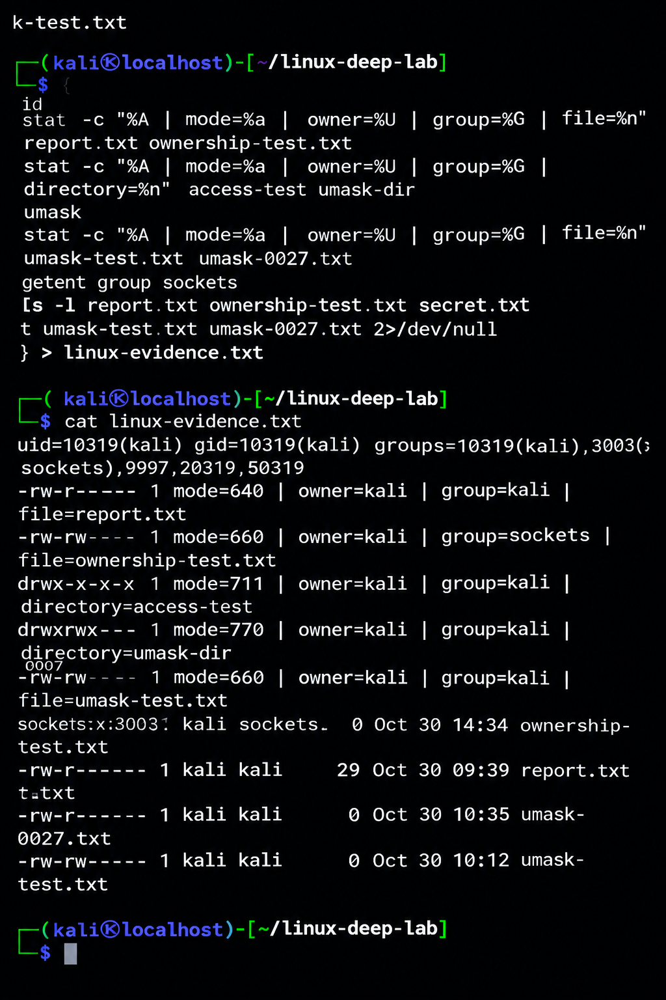

01 / SECURITY
Cybersecurity
Learning web security, authentication, authorization, security testing, and defensive security concepts.
CYBERSECURITY • WEB DEVELOPMENT • LEARNING
I'm developing my cybersecurity skills through hands-on projects, Linux practice, networking fundamentals, programming, and continuous learning. CyberLab documents what I study, build, test, and improve.
Learning portfolio: the browser-based labs are educational simulations, not production security systems.
The person behind CyberLab
01 / ABOUT
CyberLab is my personal cybersecurity learning portfolio. I use it to practise technical skills, explore security principles, document what I learn, and demonstrate progress through practical projects.
My goal is to develop a strong foundation in computing and cybersecurity and pursue further education in the field.
02 / MY STORY
My journey into cybersecurity began with curiosity. I was fascinated by the word "hacker" and wondered how hacking worked, how people discovered weaknesses in technology, and how they developed the skills to understand systems deeply.
My curiosity became more personal when I lost access to an email account after sharing my password with someone. That experience showed me how important digital security is and how much I wanted to understand about protecting accounts and responding to security problems.
As I began learning, I became interested in how systems work, how security weaknesses occur, and how those weaknesses can be prevented. What began as curiosity gradually became a field I wanted to explore more deeply.
I am still learning, and I know there is much more to understand. Through CyberLab, I practise what I learn, build educational projects, and document my progress. I want to develop the knowledge and practical skills needed to help make digital systems safer.
I also hope to build a career in cybersecurity that will help me become financially independent and support myself. I see this field as an opportunity to combine curiosity, continuous learning, and long-term career ambitions.
My journey is ongoing, and my curiosity motivates me to keep learning.
03 / TECHNICAL FOCUS
Building practical skills in cybersecurity, web development, Linux, and networking through hands-on learning.
01 / SECURITY
Learning web security, authentication, authorization, security testing, and defensive security concepts.
02 / DEVELOPMENT
Building responsive websites and learning how frontend interfaces and browser-side code work.
03 / SYSTEMS
Practising command-line skills, file permissions, ownership, user and group information, and system fundamentals.
04 / NETWORKS
Studying TCP/IP, DNS, HTTP, TLS, ports, and the foundations of network security.
04 / PROJECTS
Projects documenting my progress in web development, cybersecurity fundamentals, and Linux. Each entry distinguishes working features from ongoing learning.
FEATURED / WEB DEVELOPMENT
A personal portfolio built to document my cybersecurity learning, demonstrate web-development skills, and present practical work in one place.
WEB SECURITY / EDUCATION
Browser-based educational simulations for exploring password characteristics, login protections, input validation, URL structure, hashing concepts, and access control.
LINUX / HANDS-ON LEARNING
Practical work exploring Linux permission modes, umask behavior, file ownership, and group metadata in my Kali NetHunter environment.
05 / INTERACTIVE LABS
Try these local browser demonstrations to explore basic security concepts. Do not enter real passwords or confidential information.
LAB 01 / PASSWORD SECURITY
Explore password length and character variety using a local demonstration. Use a made-up sample, never your real password.
Enter a sample to begin.
Characteristics: not assessed
Learning note: this analyzer checks length and character variety only. It does not check password breaches, guessability, or real-world strength. The analysis runs in your browser.
LAB 02 / AUTHENTICATION
Explore login success, failed attempts, and temporary lockout behavior. This is a local demonstration, not a real login system.
Username: student
Password: CyberLab123!
These credentials are public examples, not secrets.
Waiting for a login attempt.
No events yet.
Security lesson: real authentication systems need server-side rate limiting, secure password hashing, session protection, and monitoring. This browser-only lockout can be bypassed and does not protect an account.
LAB 03 / WEB SECURITY
Inspect a URL's structure and identify patterns that deserve attention. This tool does not visit the address or prove whether a site is malicious.
Waiting for a URL.
Enter a URL to begin.
URL details will appear here.
No analysis has been run.
Learning note: HTTPS encrypts a connection but does not guarantee that a site is trustworthy. Automated indicators can produce false positives and cannot replace careful investigation.
LAB 04 / INPUT SECURITY
Test how an allowlist-based rule accepts or rejects sample input.
Enter a sample and run the test.
This demo accepts 1–100 characters containing only letters, numbers, spaces, underscores, or hyphens.
Examples: student_123 passes;
admin! fails because of the exclamation mark.
Learning note: validation rules depend on the application's needs. Browser-side validation improves usability but must not replace server-side validation or context-appropriate output encoding.
LAB 05 / CRYPTOGRAPHY
Generate a SHA-256 digest for sample text using your browser. The input is processed locally by this demo.
Your digest will appear here.
The same input produces the same digest. A small change to the input produces a different digest. SHA-256 produces a 256-bit digest, usually displayed as 64 hexadecimal characters.
Hashing is one-way in design; it is not encryption and does not have a decryption key.
Security note: never use a fast general-purpose hash like SHA-256 alone to store real user passwords. Password storage should use a dedicated password-hashing algorithm such as Argon2id, scrypt, or appropriately configured bcrypt.
LAB 06 / ACCESS CONTROL
Select a simulated user role and test whether that role is allowed to perform a privileged action.
Choose a role and attempt the action.
Learning note: this is a browser-only simulation, not real authentication or authorization. Production applications must enforce permissions on the server for every protected action.
06 / HANDS-ON LINUX
Practical Linux exercises completed in my Kali NetHunter environment using Termux on Android.
Practised reading and interpreting Linux permission modes using
chmod, ls -l, and stat.
640 — owner can read and write; group can read.660 — owner and group can read and write.700 — only the owner has permissions.770 — owner and group have full permissions.Explored how directory permissions control listing names, creating entries, and accessing known paths.
Mode 711 gives the owner full access while group
members and others have execute/search permission only.
Tested how umask affects permissions assigned to newly created files and directories.
umask 0007: observed file mode 660.umask 0027: observed file mode 640.These results depend on the permissions requested by the creating program.
Practised checking file ownership with stat and
changing group ownership with chgrp.
Verified that ownership-test.txt had owner
kali, group sockets, and mode
660 after the group change.
ls -l, stat, chmod,
umask, chgrp, id,
getent group, mkdir, touch,
and printf.
Learning outcome: I practised interpreting permission bits, examining user and group information, and verifying file metadata through terminal commands.
Environment: Kali NetHunter on Android. This is a personal educational lab, not a production security audit.
Terminal evidence from my Kali NetHunter environment on Android. The screenshot documents permission modes, directory access, umask experiments, and group ownership checks.

07 / THE ROAD AHEAD
This portfolio will grow as I complete projects and develop new skills.